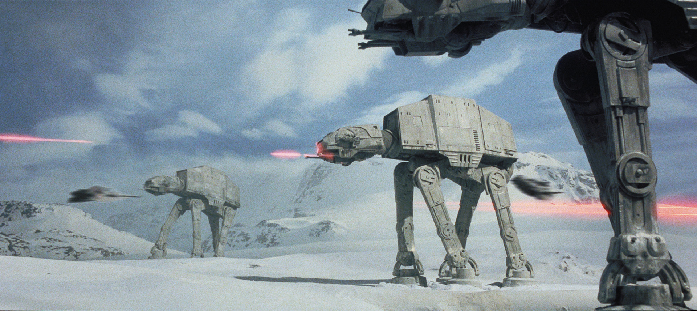

Star wars the empire strikes back är en direkt efterföljare till Star wars a new hope. Där vi fortsätter följa motståndsrörelsen efter deras lyckad attack på dödstjärnan. Det fortsätter med att de blir förföljda av emperiet till en gömd bas.
Filmen utgivningsdatum var 15 augusti 1980.
Skaparen av filmen är Goerge Lucas med Lucasfilm
